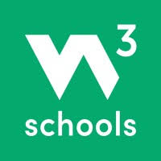
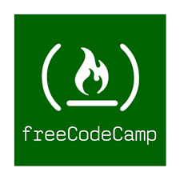
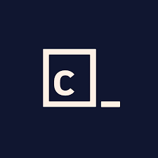
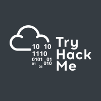
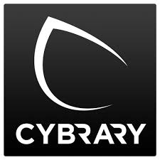

توجد العديد من المنصات التعليمية الممتازة التي تقدم دورات في البرمجة والأمن السيبراني، سواء كانت مجانية أو مدفوعة. من بين أفضل المنصات المجانية: أكاديمية خان، كورسرا (مع خيارات مجانية)، وإدكس (مع خيارات مجانية). أما بالنسبة للمنصات المدفوعة، فتشمل يوداسيتي، لينكدإن ليرنينج، وبلورالسايت. كما توجد منصات متخصصة في الأمن السيبراني مثل سايبر وان التي تقدم تدريبات عملية ومحاكاة للهجمات السيبرانية.
منصات تعلم البرمجة

W3Schools
مرجع شامل ودروس تفاعلية لتعلم لغات الويب مثل HTML, CSS, JavaScript, Python, SQL وغيرها الكثير.
زيارة المنصة
freeCodeCamp
منصة مجانية لتعلم البرمجة من خلال مشاريع عملية وشهادات معترف بها في تطوير الويب والبيانات.
زيارة المنصة
Codecademy
دروس تفاعلية ومسارات تعليمية موجهة لتعلم لغات البرمجة المختلفة وتطوير المهارات التقنية.
زيارة المنصةمنصات تعلم الأمن السيبراني

TryHackMe
منصة تعليمية عملية لتعلم الأمن السيبراني من خلال غرف تدريب تفاعلية وتحديات اختراق.
زيارة المنصة
Hack The Box
منصة متقدمة لتعلم اختبار الاختراق والأمن السيبراني من خلال آلات افتراضية وتحديات واقعية.
زيارة المنصة
Cybrary
مكتبة ضخمة من الدورات التدريبية المجانية والمدفوعة في الأمن السيبراني وتكنولوجيا المعلومات.
زيارة المنصةمنصات تعليمية إضافية
إليك مجموعة أخرى من المنصات الموصى بها لتعزيز رحلتك التعليمية.
منصات تعليمية مجانية
أكاديمية خان (Khan Academy)
تقدم مجموعة واسعة من الدورات في الرياضيات، العلوم، والفنون، بالإضافة إلى دروس في البرمجة.
زيارة الموقعكورسرا (Coursera)
توفر العديد من الدورات المجانية في مجالات متنوعة، بما في ذلك البرمجة والأمن السيبراني، بالإضافة إلى خيارات للحصول على شهادات مدفوعة.
زيارة الموقعإدكس (edX)
منصة أخرى تقدم دورات مجانية من جامعات عالمية مرموقة، مع خيارات للحصول على شهادات مدفوعة.
زيارة الموقعسايبر وان (CyberOne)
منصة متخصصة في الأمن السيبراني تقدم تدريبات عملية تحاكي الهجمات الحقيقية وشهادات معترف بها.
زيارة الموقعمنصات تعليمية مدفوعة
يوداسيتي (Udacity)
تقدم دورات متخصصة في مجالات مثل تطوير الويب، الذكاء الاصطناعي، والبيانات الضخمة، مع تركيز على المهارات العملية.
زيارة الموقعلينكدإن ليرنينج (LinkedIn Learning)
توفر مجموعة كبيرة من الدورات في مجالات مختلفة، بما في ذلك البرمجة والأمن السيبراني، وتعتمد على شبكة احترافية واسعة.
زيارة الموقعبلورالسايت (Pluralsight)
تركز على المهارات التقنية المتقدمة في البرمجة والأمن السيبراني وتطوير التطبيقات، مع اختبارات تقييمية لتحديد مستوى المتعلم.
زيارة الموقعيوديمي (Udemy)
منصة واسعة تقدم دورات متنوعة في البرمجة والأمن السيبراني وغيرها، مع خيارات مجانية ومدفوعة.
زيارة الموقعسكل شير (Skillshare)
تركز على الدورات الإبداعية والفنون، ولكنها توفر أيضًا دورات في البرمجة والتصميم.
زيارة الموقع🔗 روابط ومصادر مفيدة
لتعزيز التعلم والتدريب العملي، يوصى بالاستفادة من الموارد التالية:
🧠 منصات تعليمية مجانية (مكررة ... الاحتفاظ بها كمرجع)
📚 مقالات ومواقع عربية
🧪 بيئات تدريب وأدوات عملية
🧾 تقارير وأدلة احترافية
💡 مصادر ومقالات إضافية
أفضل المنصات التعليمية المجانية (cpointkw)
مقالة شاملة حول أفضل المنصات التعليمية المجانية لتعلم البرمجة والأمن السيبراني.
قراءة المقالالأمن السيبراني: الدليل الشامل للشهادات والتعلم (batdacademy)
دليل مفصل حول شهادات الأمن السيبراني وكيفية التعلم في هذا المجال.
قراءة المقالطريقة تعلم الأمن السيبراني (cyberone)
مقالة من سايبر وان تشرح طرق وخطوات تعلم الأمن السيبراني.
قراءة المقال💡 نصائح إضافية
- ابدأ بالأساسيات: قبل الغوص في الدورات المتقدمة، تأكد من فهمك لأساسيات البرمجة أو الأمن السيبراني.
- اختر المنصة المناسبة: ابحث عن المنصات التي تقدم المحتوى الذي يناسب مستوى خبرتك وأهدافك التعليمية.
- لا تخف من التحدي: تعلم البرمجة والأمن السيبراني يتطلب ممارسة وتحديًا مستمرين.
- استفد من المجتمعات عبر الإنترنت: انضم إلى المنتديات والمجموعات عبر الإنترنت لتبادل الخبرات والتعلم من الآخرين.